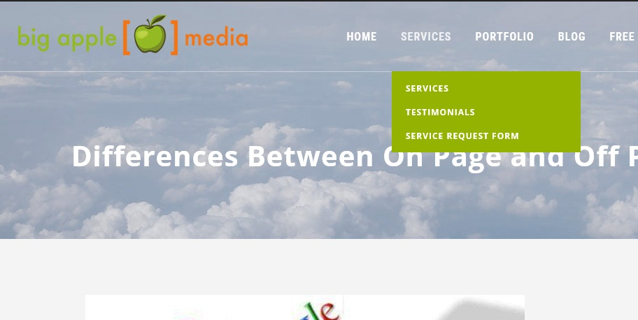

SEO ON PAGE TECHNIQUES
1There are many people who are just starting to blog and many more that have run their own site for a while, that don’t know what SEO is and how to implement it! SEO simply stands for Search Engine Optimisation. This is where you construct your web pages and implement certain techniques to help you rank as high as possible on search engine result pages (SERPs). The higher your pages can rank on Google/Bing/Yahoo/etc. results pages, the more traffic your site is likely to get. Now, SEO can be split up into two separate categories; On-Page SEO & Off-Page SEO. On-Page SEO refers to all the things that you can do ON your website to help you rank higher, such as page titles, internal linking, meta tags & descriptions, etc. Off-Page SEO refers to all the things that you can do directly OFF your website to help you rank higher, such as social networking, article submission, forum & blog marketing, etc. In today’s post we will be looking specifically at On-Page SEO and some of the most effective ways to increase your page rankings on search engines.

1. PAGE TITLES Your page titles are one of the most important SEO factors on your site. Each of your pages & posts should have its own unique title, which includes the main keywords for that page. For example, you could write a blog post about a new chocolate cake recipe that you have tried. It is therefore vitally important that you include ‘Chocolate Cake Recipe’ within your post title, perhaps “Easy Chocolate Cake Recipe” or “ Chocolate Cake Recipe for kids”, etc. This way, whenever someone searches for Chocolate Cake Recipes in a search engine, your post has a better chance of showing up because you have included those keywords.
2. META DESCRIPTIONS Many people forget to include meta descriptions for their pages. These descriptions are an important place to include relevant keywords for your content, as these are used within the search results when your page is listed. For instance, if we continue to use the ‘Chocolate Cake Recipe’ example, then a good meta description for that page would include those keywords and related ones. So, “This easy chocolate cake recipe is possibly the most delicious, mouth watering, chocolatey cake ever made.” would be a great meta description to use, as it is relatively short, whilst containing a number of specific keywords.
3. META TAGS For each of your pages, you can include a set of keywords in the form of meta tags. These should be all the relevant keywords of your content, which you will have researched previously. I use a WordPress plug-in on my sites called ‘All In One SEO Pack’. This allows me to enter all of my meta tag keywords, meta description and page title at the bottom of each of my posts before publishing. This simply inserts all of the information into your page HTML format for you, making your life a little easier.
4. URL STRUCTURE Including search engine friendly URLs for each of your pages is highly recommended, as these bring better crawling. Shorter URLs seem to perform better in search engine results, however that is not the only factor. URLs that include targeted keywords, also perform better. The location of these keywords can also be a major influence. For example site.com/keyword would perform better than site.com/365/738/subfolder/keyword etc. As you can see for this page, the URL is http://onlineincometeacher.com/traffic/on-page-seo-techniques/ I have included the keywords that are relevant for this post.
5. BODY TAGS (H1, H2, H3, H4, etc.) When writing your articles, you should break up your content into smaller sections & paragraphs to make it easier for people to read. These sections can be given heading, which is where H1, H2, H3, H4, etc. tags are used. Generally H1 tags are reserved for your main page title, with subsequent headings (just like the ones I have used throughout this post) being issued H2, H3, etc. Search engines use these to determine what is important within your content. This is why keyword rich headines are more useful than generic ones. Make sure you write keyword rich headings in the order of priority in H1, H2 and H3 title tags. They are used by many crawlers to differentiate important content.
6. KEYWORD DENSITY Including relevant keywords throughout your content is very important, as it helps search engines work out what your content is about. However, try not to excessively repeat and overuse keywords just for search engine robots. This can lead to your site being banned from search engines. To avoid this, try to keep your keyword density to roughly 2-5%. If you find this hard, get out a thesaurus and broaden your writing vocabulary. This way, you are still writing about the same thing, without risk of being banned.
7. IMAGE SEO Using images within your content is a great way to make your site more visually appealing and break up boring chunks of text. You can utilise these images to help improve your site SEO. All your uploaded images have titles, so treat them just the same as your page titles. Including relevant keywords can help people find your site when searching on Google Images. You can also include Alt Text and Descriptions for your images, making them even more useful with SEO.
8. INTERNAL LINKING People often think that the only links that count are those from other websites. While these links are important, these are not the only important links! Placing links to your other website pages, is a great way of improving your site and used properly, internal links can be a useful weapon in your SEO arsenal. Not only does it make it much easier for your visitors to navigate around your site and find all of your content, but it also ensures that your site gets properly crawled allowing the search engines to find all of your pages. It also helps to build the relevancy of a page to relevant keywords and phrases, whilst also helping to increase the Google PageRank of your pages. There are a number of different methods that you can use to improve your internal linking structure. The main being; content links and permanent navigation links. For bloggers, content links are very useful when used properly. These are links that are placed within your article posts, which redirect people to other relevant pages on your site. For example, this post is focused on increasing traffic to your site, so readers may also find a post on ‘How To Drive Traffic To Your Blog‘ useful. Perhaps other people are just starting out blogging and want to learn more.
SEO OFF PAGE TECHNIQUES
The battle for awesome organic rankings is waged on two distinct fronts: what Google finds on your pages (on page SEO), and what it hears other websites “say” about your page (off page SEO). On page factors are typically the easiest to affect, because they’re driven by your pages’ content and behavior. These ranking signals include the length of your content, its relevance for certain keyword phrases, how many people click on your page in search results, how long people spend on your page, and searchers’ behavior after they’ve visited your page. Off page ranking, however, often requires more creativity, ingenuity, and technical prowess to do well. To parse off page rankings, Google looks primarily at the websites that are linking back to a page. If these sites are high quality and authoritative, it stands to reason that your page is valuable. So, how do we make an impact on what happens on websites operated by complete strangers? These five techniques for off page SEO (that marketers can tackle on their own) will give you the most return on your investment of time and effort. Off Page Technique #1: Guest Posting Guest blogging is ranked number one on this list because it’s such a versatile strategy. It gets you very high quality backlinks, but it also increases your site’s exposure and authority to a wider audience. As a bonus, guest posts can also drive referral traffic to your own articles or landing pages, which means they can be a lead generation source in addition to these other great outcomes. The downside to guest posting is that it can be time consuming. Brian Dean of Backlinko offers five detailed steps in his Definitive Guide to Guest Blogging, most of which have sub-steps involved:
1.GUEST POSTING - Guest blogging/Posting is ranked number one on this list because it’s such a versatile strategy. It gets you very high quality backlinks, but it also increases your site’s exposure and authority to a wider audience. As a bonus, guest posts can also drive referral traffic to your own articles or landing pages, which means they can be a lead generation source in addition to these other great outcomes. The downside to guest posting is that it can be time consuming.
2.BROKEN LINK BUILDING - This is kind of like guest posting’s little brother. You get similar outcomes in terms of SEO benefit because you’re working to create backlinks on relevant, authoritative sites, but you’re usually not creating something from scratch to earn each new link. The idea behind this off page SEO technique is that there are broken links littering the internet, and you’re going to be the good Samaritan who offers to help fix them. All you ask in exchange is that those broken links be replaced with a link to some of your content. Seems fair, right? But, like its big brother guest posting, this technique requires you to invest time to get the SEO payoff. The steps are also similar: Identify Relevant Sites with Broken Links. Neil Patel’s Step by Step Guide to Modern Broken Link Building offers many great tools to help with this complicated process. Find Your Content that Fits the Broken Links. You may be able to use existing content for some broken links, but in other cases you’ll have to make something from scratch. Reach Out With Your Correction Offer. Again, use Neil’s email template to contact webmasters or editors. Bad emails will make your earlier efforts useless because no one will take you seriously. Track Your Results. Not everyone will let you know they’ve used your link, so you want to keep track of which sites take you up on your offer and which ones don’t. You’ll also need to keep an eye on ROI to make sure this technique is paying off. I recommend this off page SEO technique if you’ve got an existing stock of great content you can offer links to, or you’re a highly prolific content team that can create useful resources on the fly. Otherwise, you’ll need to plan pretty far in advance to create the resources needed to offer replacements for broken links and this strategy becomes harder to execute effectively.
3.UNIQUE SEARCH RESULTS- A single piece of original research produced by the Content Marketing Institute has produced over 6,200 backlinks in just over six months. Wouldn’t it be great if you could earn that kind of coverage? Well, you can. All you need is a survey and some people to take it. Ok, it’s a little bit more complicated than that, but compared to the previous two off page SEO techniques, the payoff time can be shorter and the project easier to complete. The six steps that our survey team has outlined are: Determine Survey’s Goals and Audience. You want to make sure your results are interesting to the people you’re hoping to reach, so pick a goal and audience before you write a single question. Find People to Take Your Survey. Whether it’s through email, social media, or a paid panel, get a group of respondents together to answer your questions. Design the Survey. Be considerate of your audience’s time and balance their needs with your desire to collect data. Distribute and Monitor Results. Keep an eye on your responses in real time. You don’t want to collect a ton of data only to realize some questions weren’t set up correctly. Create Unique Content. The authority PDF is the ultimate piece of research content, but you can easily produce infographics, slide shares, and guest posts (see technique #1) with your results. Amplify the Reach. As with all content marketing, you should be prepared to spend as much time and money on distribution and amplification as you do on the content itself.
4.INFOGRAPHICS- As with unique research, infographics represent the intersection between visual interest, helpful information, and novelty that makes them prime link targets. Unbounce reported that the volume of searches related to infographics went up 800% in just two years, and they will continue to be a hugely successful content type as visual social media like Instagram and Pinterest explode. The problem with infographics is that it’s very easy to get them wrong. Many marketers have design skills that they can tap into the make infographics on their own, but others will want to consider outsourcing this type of content production. You definitely don’t want to invest time and resources into visual content that nobody links to. Ever.
5. ON PAGE OPTIMIZATION - It may seem a little bit like cheating to include on page optimization in a list of off page SEO techniques, but the harsh reality is that if your site isn’t user-friendly and mobile-optimized, all the back links in the world won’t save you from SEO destruction. By some estimates, as much as 30% of your on page “score” comes from usability factors, such as the design and quality of your page as measured by user engagement. Give your back links the best chance of having an impact by creating a nice, friendly site for them to link to.
SUMMARY
These 8 techniques are just some of the ways that you can improve your on-page SEO. Any one used independently of the others won’t make much difference to your site ranking, however when used together, they can help to improve your site traffic. They will help to get your pages working better, they will help to get your entire site crawled by search engine spiders, they will help increase the value of internal pages and they will build the relevancy of internal pages to specific keyword phrases. So, it pays to spend some time implementing these to improve your site! Please leave your comments below & feel free to ask any questions.
sOURCES
We all love to explore the work of others.So , we have provided some with different authors to that defines how SEO works included here are what's most important to you.

Off page SEO BY RELIABLEFSOFT.COM
refers to techniques that can be used to improve the position of a web site in the search engine results page (SERPs). Many people associate off-page SEO with link building but it is not only that. In general, off Page SEO has to do with promotion methods – beyond website design –for the purpose of ranking a website higher in the search results.
Let’s take it from the beginning…
Learn more

TECHNIQUES BY BIGAPPLEMEDIA.COM
Optimization of websites is a very important strategy to deliver the best results. SEO or search engine optimization using the best proven strategies helps to make business websites appealing to search engines. This in turn improves the ranking and enables the website to appear among the top ranking websites on search engine result pages.
Learn more